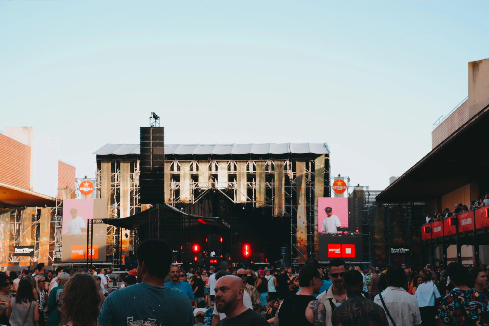
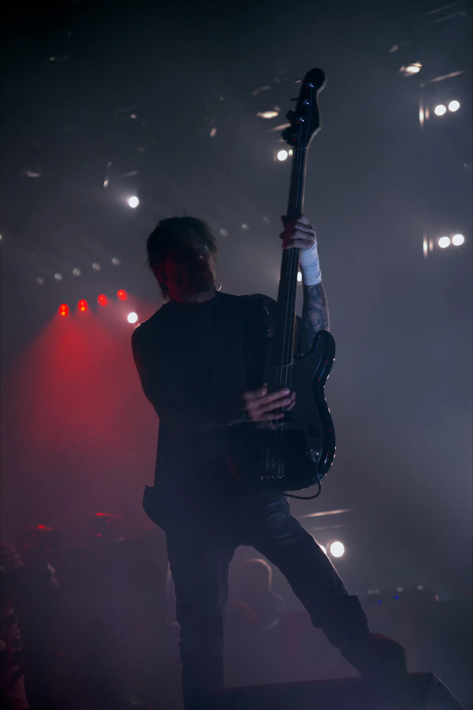
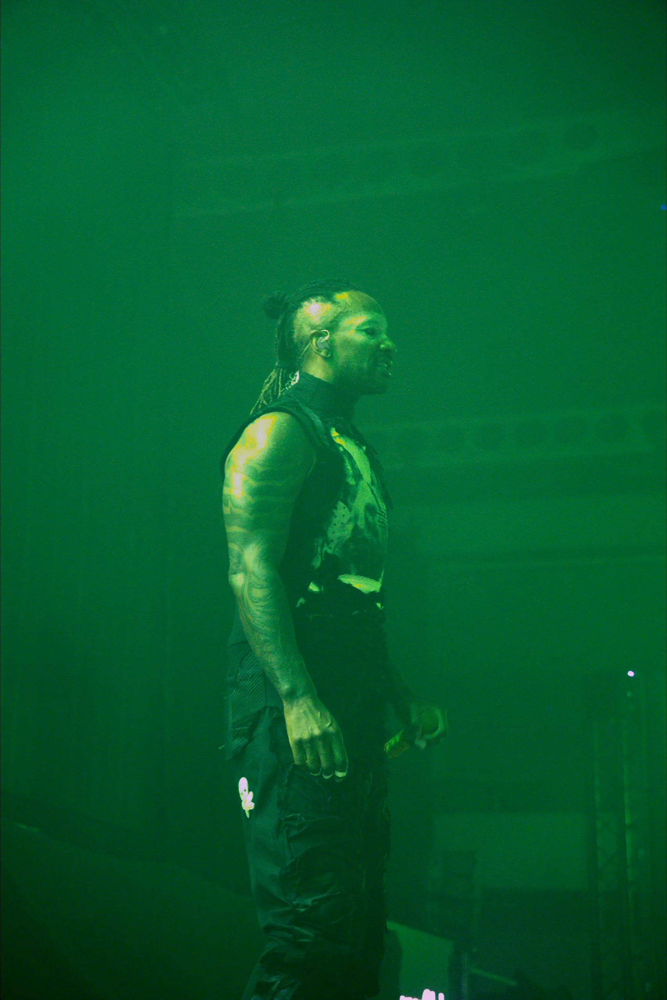
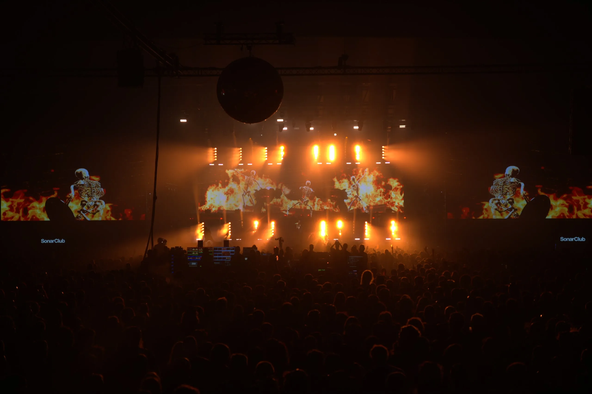

The Prodigy @ SonarClub - Sónar 2026 · Photo : Phat & Phurious FM
2 jours
vendredi & samedi
12 sets
vus en live
1ère
accréditation presse PnP
La bande-son
Lancez la playlist officielle du festival et lisez la suite en musique, l'immersion n'en sera que meilleure. Enjoy !

Maz @ SonarVillage - Sónar 2026 · Photo : Phat & Phurious FM
Vendredi 18 juin : premier jour du Sónar 2026
La Fira Gran Via est taillée pour ce genre d'événement. Un complexe de hangars reconvertis, immense, qui avale cinq scènes simultanées sans jamais perdre en cohérence. On pose les bagages à Barcelone avec le bracelet presse au poignet. C'est notre première accréditation et on y croit à moitié. Tout premier festival sous la bannière PnP, franchement ça fait quelque chose.
Premier arrêt au SonarVillage by Estrella Damm : Maz, DJ brésilien, de 18h35 à 20h05. On ne connaissait pas le nom, mais c'est exactement le genre de découverte que Sónar sait provoquer. De l'afrohouse groovy et dansante, calibrée pour un dancefloor qui se remplit tranquillement en fin d'après-midi. Une belle entrée en matière.
Daito Manabe ouvre les hostilités au SonarHall, une salle habillée de rideaux de velours rouge qui lui donnent des faux airs de Twin Peaks, avec une performance audiovisuelle qui donne immédiatement le ton de ce que Sónar sait faire et que peu de festivals tentent. L'artiste japonais fait exister la donnée sous forme physique : des systèmes qui pulsent, des corps d'artistes traversés par des courants électriques à la milliseconde près, de la technologie au service d'une expérience sensorielle totale. Cerebral, perturbant, impossible à détourner le regard.

Daito Manabe @ SonarHall - Sónar 2026 · Photo : Phat & Phurious FM
Kelis au SonarVillage confirme son statut d'icône sans effort apparent. Plus de vingt ans après Milkshake et encore là, avec la même autorité, la même façon d'occuper une scène comme si elle lui avait toujours appartenu. La voir dans un festival de musique électronique en 2026 n'a rien de paradoxal : elle a toujours été au-dessus des cases dans lesquelles on essaie de la faire rentrer.
RIRIA au SonarLab x Rinse
Et puis vient le moment qui a tout changé. RIRIA au SonarLab x Rinse. On connaissait les mixes, les sets à Londres, les connexions avec l'orbite Rinse FM. Mais en live, dans ce contexte, sur cette scène en plein air, c'est autre chose.
RIRIA a pris le contrôle du SonarLab à la deuxième minute et ne l'a plus lâché jusqu'à la dernière seconde.

RIRIA @ SonarLab x Rinse - Sónar 2026 · Photo : Phat & Phurious FM
Selecta chirurgicale et une énergie scénique qui déborde sans jamais forcer. Cette capacité rare à lire un dancefloor et à y répondre avant même que le public formule une demande. Le public était conquis dès les premières minutes. Une performance qui restera gravée dans la mémoire de ceux qui y ont assisté. Retenez ce nom.
Une note au passage sur l'absence de Goldie : blessure au bras, le pionnier de la drum'n'bass ne pouvait pas honorer son b2b avec Doc Scott au SonarLab x Rinse. Une belle affiche qui n'aura pas eu lieu. On lui souhaite un prompt rétablissement.
Skepta s'impose sur la grande scène avec l'évidence tranquille de quelqu'un qui n'a rien à prouver mais continue quand même, parce que c'est comme ça que tu restes pertinent après deux décennies. Nia Archives présentait son dernier live jungle, et on insiste sur le mot : un vrai live, pas un DJ set, chose encore rarissime sur cette scène. Une trajectoire qui n'a rien d'accidentel : présence magnétique, une identité musicale qui traverse les formats.
Sammy Virji en climax du Sónar by Night
Vient le tour de Sammy Virji, on l'a vu plusieurs fois chez PnP et on peut vous dire qu'il ne nous déçoit jamais ! La façon qu'il a de construire un set d'une heure trente sans que la tension ne retombe une seule fois, en alternant ses propres productions et des edits qu'on n'avait encore jamais entendus nulle part. Le climax de la nuit, alors qu'il reste encore une douzaine d'artistes à enchaîner jusqu'à 7h du matin.
Anecdote : ma casquette "It's Virji Isn't it?" a trouvé son utilité. Le lendemain, pendant le set de Nimino, quelqu'un nous a interpellés. Il a repéré le merch. Il portait un t-shirt Sammy Virji. Deux personnes qui aiment les mêmes artistes, au même endroit, au même moment. C'est aussi le festival Sónar, finalement !

Sammy Virji @ SonarVillage - Sónar 2026 · Photo : Phat & Phurious FM
Samedi 19 juin : deuxième jour du festival
Nimino en ouverture de journée. Ce set, on l'attendait depuis longtemps. Cette house music qui a de la mémoire, des textures qui racontent quelque chose, une façon de construire un set comme une conversation plutôt qu'un assaut. Le SonarVillage s'est rempli progressivement et chaque transition répondait exactement à ce que la foule cherchait sans pouvoir le formuler. C'était exactement ce qu'on espérait. Et un peu plus.
Un mot pour l'équipe des accréditations presse de Sónar : on est profondément reconnaissants de la confiance accordée à Phat & Phurious par l'équipe presse internationale. Ça représente énormément pour nous, un vrai jalon pour le projet. Et voir tous ces artistes qu'on apprécie tant, dans ce contexte, n'existe que grâce à cette confiance.

Nimino @ SonarVillage - Sónar 2026 · Photo : Phat & Phurious FM
Carlita prend la suite avec une montée en température progressive, cette house mélancolique et organique qui lui est propre. Elle partage la même maison que Nimino : Ninja Tune, un label qu'on affectionne particulièrement chez PnP et une référence historique de l'électronique indépendante. On la retrouvera d'ailleurs plus tard sur cette même scène, à la basse cette fois, aux côtés de WhoMadeWho (live) à 23h15.
The Prodigy en headliner au SonarClub
Il y a des artistes qui appartiennent à ta jeunesse. Pas ceux que tu as découverts avec tes parents ou tes grands frères : ceux que tu as trouvés toi-même, dans ta chambre, sur une cassette d'un pote ou une compilation gravée. The Prodigy fait partie de ceux-là pour beaucoup d'entre nous. Les voir en headliner à Sónar 2026, c'est un privilège.
Firestarter. Breathe. Smack My Bitch Up. Les basses tombent et vingt ans d'adolescence remontent d'un coup. La salle ne chante pas, elle hurle.

The Prodigy @ SonarClub - Sónar 2026 · Photo : Phat & Phurious FM
Ouverture sur Omen, notre morceau préféré du groupe : la meilleure entrée en matière possible. The Prodigy sans Keith Flint était une question ouverte. La réponse live est définitive : le groupe reste une machine de guerre. La production scénique écrase tout, les basses prennent le corps physiquement, et la salle ne lâche rien pendant toute la durée du set. Rappels jusqu'à Out of Space pour refermer la boucle. Un moment historique. Un retour aux années lycée que personne n'avait planifié mais que tout le monde attendait.



The Prodigy @ SonarClub - Sónar 2026 · Photo : Phat & Phurious FM
Dom Dolla, Joy Orbison & Amélie Lens presents AURA
Dom Dolla, dont l'énergie scénique est une classe à part, transforme son slot en véritable événement. San Frandisco, plus de 100 millions de streams et toujours aussi efficace, tombe et met tout le monde d'accord en une poignée de secondes : cette tech house ronde et charnue qu'on affectionne particulièrement chez PnP, celle qui prend le corps avant même de demander l'avis de la tête. Impossible de rester statique. Joy Orbison prend ensuite le relais. Initié à la scène londonienne par son oncle, le pionnier jungle Ray Keith, excusez du peu. Cet héritage s'entend directement dans son set : garage, techno, house et breakbeat hardcore qui se percutent sans jamais se marcher dessus. Une lecture dense, référencée, jamais prévisible. Et pour refermer la nuit, Amélie Lens presents AURA. Pas qu'un nom de tournée : un concept scénique entier, où les jeux d'ombre et de lumière comptent autant que le son. Format plus sombre, plus industriel, aux antipodes d'un set Amélie Lens classique, et premier aperçu d'un album du même nom attendu à la rentrée. C'est précisément pour ça que c'est intéressant.
Notre bilan du Sónar 2026 à Barcelone
Ce qui reste après deux jours, en dehors des sets : la fluidité logistique. Entrées rapides et bien gérées, personnel compétent et souriant du premier badge de sécurité au dernier staff de scène. Infrastructure pensée pour tenir sur la durée : coin chill bien placé, autotamponneuses entre les sets parce que pourquoi pas, points d'eau potable gratuits disséminés un peu partout sur le site, food trucks nichés au cœur des scènes avec une variété culinaire qui ne déçoit jamais, prix des boissons raisonnables pour un festival de cette envergure, son calibré avec soin sur toutes les scènes y compris les plus petites. La scénographie lumière élève chaque set sans l'écraser. Tout est pensé pour qu'on profite à fond du festival.
Cette édition 2026 confirme ce que le festival Sónar construit depuis trente ans : un cadre dans lequel la musique peut vraiment compter. On reviendra l'an prochain sans hésiter !

The Prodigy @ SonarClub - Sónar 2026 · Photo : Phat & Phurious FM
Photos
Galerie Sónar 2026
Vendredi & Samedi
Vidéos
Live Report vidéo — Sónar 2026
Les zappings du vendredi et du samedi sont en ligne